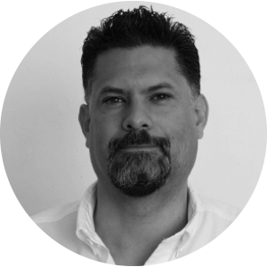

EFRÉN OSORIO
Es Especialista en Desarrollo de Programas y Proyectos de la Oficina Nacional de ONU-Habitat México.
Licenciado en Relaciones Internacionales por el ITESO y Maestro en Políticas Públicas por la Hertie School of Governance (HSoG) de Berlín,
ha sido consultor de ONU-Habitat Colombia.

FAUSTO MÁRQUEZ
Es Director del Instituto Municipal de Planeación.
Licenciado en Arquitectura por el Instituto Tecnológico de Monterrey y candidato a Maestro en Landscape por la
Universidad Iberoamericana de León, Especialización en Agencias de Desarrollo Local, Universidad de Alcalá de Henares, España.
SALVADOR HERRERA
Es el asesor técnico principal del Q500 durante la segunda fase del proyecto y consultor de ONU-Habitat desde enero de 2016. Urbanista y paisajista,
ha trabajado en planeación urbana y del transporte durante 10 años en el sector gubernamental de diferentes países.

ALFREDO HIDALGO
Es el asesor técnico principal del Q500 durante la primera fase de la estrategia.
Arquitecto, PhD. Académico en México, Chile y Colombia, actualmente es también Decano Asociado de Investigación, Posgrados y Extensión de la EAAD del Tec de Monterrey.
Fundador de S2 Arquitectura (2002) y de CITA A.C (2005), un centro de investigación sobre la ciudad.
Equipo multidisciplinario, con sede en la ciudad de Querétaro,
encargado de la coordinación técnica y administrativa y la comunicación y difusión del Q500.
MARÍA GUADALUPE MORALES
Es la Líder de Proyectos Urbanos del Q500. Titulada en Arquitectura, con Maestría en Urbanismo,
ha publicado artículos y ha participado en diferentes conferencias sobre estrategias urbanas, sostenibilidad y recolección pluvial.
ITZEL SÁNCHEZ
Es Auxiliar de Proyectos Urbanos del Q500. Titulada en Urbanismo por la Facultad de
Arquitectura de la UNAM. En los últimos años ha colaborado en proyectos de carácter urbano en el área de Vinculación de la UNAM.
JAVIER MÉNDEZ
Es Auxiliar de Proyectos Urbanos del Q500. Titulado en Arquitectura,
con Maestría en Ciudad y Arquitectura Sostenibles por la Universidad de Sevilla.
JOSÉ ÁVILA
Es Líder técnico en SIG del Q500. Licenciado en Ecología y candidato a maestro en Geografía, tiene más de 15 años de experiencia en la integración,
el manejo y la aplicación de SIG y sensores remotos en proyectos orientados al ordenamiento ecológico territorial y análisis ambientales.
SONIA HERRERO
Es la Oficial de Comunicación del Q500. Licenciada en Publicidad y Relaciones Públicas, y en Comunicación Audiovisual,
tiene un postgrado en Cooperación Internacional al Desarrollo por la UOC y Cruz Roja Española.
ALMA ROJO
Es Auxiliar de Comunicación del Q500. Estudió la Licenciatura en Comunicación en la Universidad Cuauhtémoc de Querétaro.
Cursó un Diplomado en Community Management y ha tomado talleres y participado en proyectos de Cine y Documental.
FRANCISCO PAILLIE
Es Líder de Participación Social del Q500 durante la primera fases de la estrategia. Es Psicólogo Social y especialista en Cohesión Social. Tiene gran interés por temas de urbanismo y derecho a la ciudad.
Ha trabajado en el diseño e implementación de proyectos educativos, material para talleres y procesos de integración social.
MARCELA VALERA
Es la coordinador operativa del Q500 durante la primera fase del proyecto. Licenciada en Relaciones Internacionales y Maestra en Población y Desarrollo en la London School of Economics.
Trabajó en un barco académico en proyectos sociales en Asia, África y Europa, y organizó expediciones en velero por el mundo con fines medioambientales.
PRACTICANTES
Estudiantes de diferentes universidades de Querétaro que están finalizando sus estudios ofrecen su tiempo y colaboran con el equipo base para dar apoyo al desarrollo del Q500. Colaboran o han colaborado con el Q500: José Luís Martínez, Hannah Yu-Pearson, Ma. Fernanda Ruíz, Salvador Arias, Galilea Santoyo, Iris Alcántara, Daniela Hernández, Ma. Fernanda Pacheco, José Luís Pohls, Lucas Alcántara, Yael Murillo, Claudia Peralta, Montserrat Ramírez, Alina Khelr, Susana Torres,
Jessica Malvido, Fabiola Silva, Grecia Jurado, Karla Tejas, Sofía Karen Cirett, Jessica Tania Gonzalez y María Guadalupe Hernández. Muchas gracias por su apoyo.
KAROL YÁÑEZ
Es Consultora de la dimensión de Sostenibilidad Ambiental del Q500. Tiene 12 años de experiencia en proyectos de sostenibilidad ambiental y justicia social. Estudió la Maestría en Medio Ambiente y Desarrollo Sustentable y un PhD en Planeación y Desarrollo en el Universtiy College London. Ha colaborado en proyectos de investigación en México, Londres, Ghana e India sobre soberanía alimentaria, agricultura y resiliencia urbana, y el rol de la sociedad civil en la construcción de justicia ambiental, entre otras cosas.
EMMANUEL GONZÁLEZ
Es Consultor de la dimensión de Calidad de vida del Q500. Maestro en Arquitectura y Nuevo Urbanismo, es Socio Fundador del Taller Mx, empresa dedicada al desarrollo de comunidades, y Profesor en el Tecnológico de Monterrey de las materias:
Teorías Urbanas, Metodologías de Diseño Urbano y Proyectos de casa habitación, con énfasis en accesibilidad universal.
JUAN CARLOS NERI
Es Consultor de la dimensión de Productividad del Q500. Es Doctor en Ciencias Económicas con Maestría en Desarrollo Regional y Licenciado en Economía. Profesor en la Universidad Politécnica de San Luis Potosí. Es líder del Cuerpo Académico “Desarrollo Local y Competitividad Empresarial”,
es reconocido como Investigador Nacional por el CONACYT y participa activamente en redes de investigación, productivas y empresariales.
ANA DÍAZ
Es Consultora de la dimensión de Gobernanza y Legislación Urbana del Q500. Doctora en Sociología y Profesora Investigadora en la División de Administración Pública del CIDE. Es Nivel II del SNI.
Destacan sus investigaciones sobre incorporación de la participación ciudadana en políticas públicas, gobiernos locales y gobernanza metropolitana.
HÉCTOR CASTAÑÓN
Es Consultor de la dimensión de Equidad e Inclusión Social del Q500. Es Mtro. en Planeación y Gestión del Desarrollo Regional por la Universidad de Dortmund en Alemania y la Universidad de Ciencia y Tecnología de Kumasi, Ghana.
Es Dr. en Ciencias Sociales con Especialidad en Antropología Social por el Centro de Investigación y Estudios en Antropología Social-CIESAS.
ADRIANA OLIVARES
Es Consultora de la dimensión de Infraestructura del Q500. Arquitecta y Profesora Investigadora Titular del Departamento de Proyectos Urbanísticos de la Universidad de Guadalajara, México. También es Doctora en Planeamiento Urbano, Ciudad y Medio Ambiente y en Arquitectura por la Universidad de Las Palmas de Gran Canaria,
España, e Investigadora y Consultora en las áreas de movilidad urbana, regiones urbanas y policentrismo para diferentes instituciones.
FERNANDO DE MELLO
Es el experto internacional que asesora el Q500. Arquitecto y urbanista, doctor por la facultad de arquitectura y urbanismo de la Universidad de Sao Paulo, Brasil. Es director del instituto de urbanismo y
estudios para la metrópoli URBEM, organización sin fnes de lucro especializada en la estructuración de proyectos de desarrollo urbano.
BERNADETTE GORDYN
Arquitecta argentina por la Universidad de Buenos Aires, con especialidad en Proyectos Urbanos por la KU-Leuven y la Universidad Politécnica de Cataluña. Tiene experiencia trabajando en planificación urbana y espacio público con gobiernos locales de Colombia y Argentina.
Trabajó para la Agencia de Ecología Urbana de Barcelona y en 2015 se incorporó a la oficina de enlace de Nueva York de ONU-Habitat.
HÉCTOR BAYONA
Es Coordinador de Comunicación de ONU-Habitat México y Cuba. Su trayectoria profesional abarca las áreas de la comunicación, la publicidad y los
medios digitales con experiencia de 12 años en el ámbito de la televisión, el radio, los medios impresos e internet.
SAMIE RAICHS
Es Analista de Programas de la Oficina Nacional de ONU-Habitat en México, en donde colabora en procesos de desarrollo e implementación en diversos proyectos como el de Jalisco, Zapopan, Querétaro y otras iniciativas. Es Licenciada en Relaciones Internacionales. En el 2015 trabajó en el Foro Internacional de Innovación en la Gobernanza Metropolitana de ONU-Habitat
como Responsable de hospitalidad y vinculación con más de 100 ponentes, moderadores y talleristas nacionales e internacionales.
LUIS HERRERA
Arquitecto por el Tec de Monterrey y doctor en Planificación Territorial y Urbana por la Universidad de Roma. Con experiencia en planificación urbana a nivel municipal, ha trabajado como consultor para la CONAVI. Desde 2013 a 2016 ha trabajado con ONU-Habitat en la promoción de
la Iniciativa de las Ciudades Prósperas y la implementación de los Objetivos de Desarrollo Sostenible de la Agenda 2030.